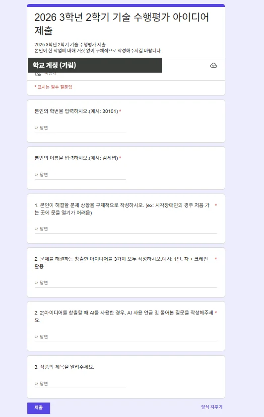
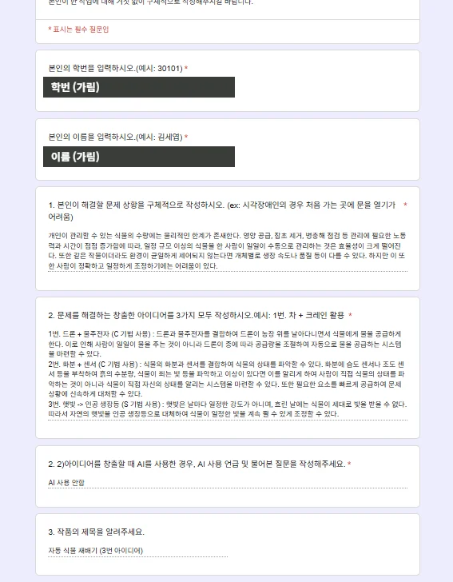
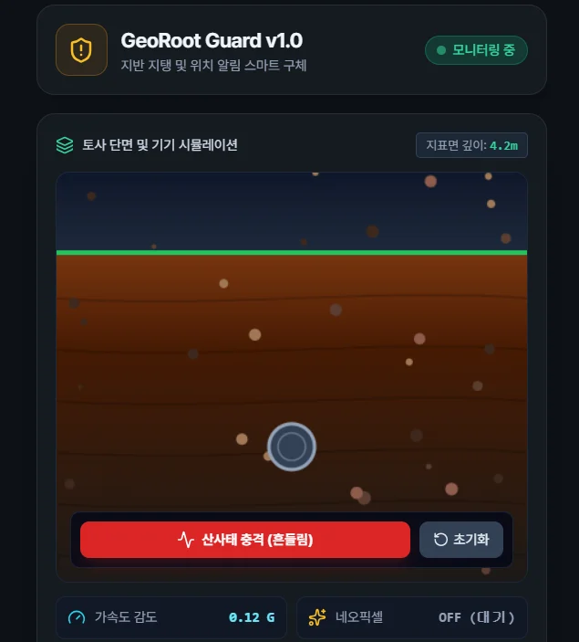

종이 한 장의 아이디어가 움직이는 발명품이 되기까지
문제를 찾고 아이디어를 내고(종이·구글 폼), 화면으로 만들고(HTML), 실제 장치 코드로 옮겼어요(메이크코드). 한 학생의 작품 「스마트 가드」를 따라가며 세 번의 수행평가를 소개해요.
학생 A의 「스마트 가드」 한눈에 보기
걸으면서 스마트폰을 보다 다치는 일(스몸비)을 막는 장치예요. 같은 아이디어가 네 번 모습을 바꿨어요.
평가 전에 배운 것
마이크로비트 4차시
- LED와 버튼
- 센서: 가속도, 온도, 빛, 나침반(자기), 터치 로고
- 소리 출력
- Robotbit 확장 장치: 서보모터(S1), 네오픽셀(P15), 초음파센서(Trig P14 · Echo P13)
1학년 내용 복습
- 스캠퍼 기법: 기존 사물이나 기술을 대체·결합·변형해서 새 아이디어를 만들어요. 7가지 중 2~3가지를 골라 써요.
- 알고리즘: 조건문과 반복문을 조합해 장치가 할 일을 순서도로 나타내요.
- 활동지 예시: 침수 지하차도 자동 차단기. 물이 일정 높이까지 차오르면 차단막이 내려가고 경고 LED가 켜져요.
문제를 찾고 아이디어를 내다
구글 폼에는 문제 상황과 아이디어 3가지를 글로 쓰고, 종이 활동지에는 가장 좋은 아이디어 하나를 스케치와 알고리즘으로 나타냈어요.
평가 방법
- 구글 폼: 해결할 문제 상황, 스캠퍼 기법을 쓴 아이디어 3가지, AI를 썼다면 어떤 질문을 했는지, 작품 제목
- 종이 활동지: 핵심 아이디어 스케치(센서와 액추에이터 표시)와 알고리즘 순서도
- 문제 상황 예시: 전동 킥보드 안전, 해양 쓰레기, 폭염, 태풍, 기타 내가 찾은 문제
아이디어가 많이 겹치거나, AI에 일반적으로 물어본 내용을 그대로 쓰면 창의성 점수가 줄어요. 예시를 그대로 따라 해도 마찬가지예요.


「자동 식물 재배기」 답변. 스캠퍼 기법(C 결합, S 대체)을 아이디어마다 표시했어요.
스케치와 알고리즘 (눌러서 크게 보기)
학생 A가 정한 것
- 문제: 걸으면서 스마트폰을 보다가 킥보드나 차와 부딪혀요.
- 장치: 스마트폰 상하좌우 네 면에 초음파센서를 달아요.
- 알고리즘: 3m 안에 물체가 있나? → 물체 길이 30cm 이상이고 속력 10km/h 이상인가? → 화면을 멈추고 경고 화면을 띄운 뒤 경보음을 15초 울려요.
아이디어를 화면으로 만들다
프롬프트를 직접 글로 써서 제미나이로 웹앱을 만들고, HTML 파일로 클래스룸에 냈어요. 이 평가에서는 마이크로비트와 연결하지 않고 화면 시뮬레이터로 만들었어요.
「스몸비 방지 초음파 스마트 경보 시뮬레이터」: 전동 킥보드가 2.5m까지 다가온 상황
종이에 쓴 것이 화면에 그대로 들어갔어요
- 스마트폰 네 면 센서→폰 테두리의 센서 4개 (상·하·좌·우)
- 3m 안 감지→레이더의 빨간 점선 원 「3m 위험 감지 경계」
- 조건 세 가지→「위험 조건 충족 여부」 판
- 화면 경고→「당장 보행을 멈추고 주위를 살피시오」
제출 규칙
- 프롬프트는 직접 글로 써서 함께 내요.
- 파일 이름은 학번 · 이름 · 제목 순서로 지어요.
- 상황 버튼(전동 킥보드, 승용차, 저속 보행자, 작은 야구공)으로 위험할 때와 안전할 때를 모두 시험해요.
아이디어가 구체적일수록(3m, 30cm, 10km/h처럼 숫자로) 화면도 정확하게 만들어져요.
실제 장치라면 이렇게 만들었을 거예요
"이 아이디어를 마이크로비트로 진짜 만든다면?"을 메이크코드 블록으로 만들고, 캡처해서 PNG로 냈어요.
제출한 블록 코드 그대로
| 블록 | 하는 일 |
|---|---|
| 시작하면 | 네오픽셀 6개(P15)를 준비해요. |
| 무한반복 | 초음파센서(Trig P14 · Echo P13)로 거리를 cm로 재요. |
distance < 300 | 3m보다 가까우면 경고 문구를 보내고 네오픽셀을 빨갛게 켜요. |
distance > 300 | 멀어지면 LED 화면을 지우고 네오픽셀을 꺼요. |
한 걸음 더: 다음에 고치면 좋은 점
- 무한반복이 두 개예요. 위쪽 반복이
distance를 계속 0으로 바꿔서, 잰 거리가 지워질 수 있어요. 거리 재기는 반복 하나에만 둬요. - 정확히 300일 때가 빠졌어요.
< 300과> 300사이에 300이 남아요. 두 번째 조건을아니면으로 바꾸면 모든 경우를 다뤄요. - 웹앱과 실제 장치의 차이를 찾아요. 웹앱에는 크기와 속력 조건도 있었지만, 초음파센서 하나로는 거리만 잴 수 있어요. 실제 장치에서 거리만 쓴 것은 알맞은 선택이에요. 무엇을 뺐고 왜 뺐는지 적으면 더 좋아요.
채점 기준
평가 요소: 피지컬 컴퓨팅 발명품 제작 및 작동 평가를 통한 단원의 교육과정 성취기준 도달 정도. 다섯 영역, 모두 100점이에요.
| 평가 요소 | 채점 기준 (점수) | 살펴본 곳 |
|---|---|---|
| 문제 설정 명확성 및 창의성최고 25점 | 문제가 명확하고 독창적 25 · 기술 연관성이 드러나지만 일반적 20 · 기술 연관성이 부족하지만 창의적 15 · 기술 연관성이 부족하고 일반적 10 · 문제가 불분명하거나 구현이 어려움 5 | 평가 ① 구글 폼 |
| 아이디어 창출 능력① 창출 기법 사용 적절성 ② 창의성 ③ 구체성 · 최고 20점 | 3가지 조건 중 3가지 만족 20 · 2가지 15 · 1가지 10 · 모두 만족하지 않음 5 | 평가 ① 구글 폼 |
| 알고리즘 평가① 순서의 명확성 ② 조건·반복의 적절성 ③ 데이터(변수) 활용 타당성 · 최고 20점 | 평가 ① 종이 활동지 | |
| 피지컬 컴퓨팅 능력① 회로 연결성 ② 코딩 능력 ③ 결과물 작동 · 최고 20점 | 3가지 조건 중 3가지 만족 20 · 2가지 15 · 1가지 10 · 모두 만족하지 않음 5 | 평가 ③ 메이크코드 |
| 창작물 평가스케치 일치성, 창작물 견고성 · 최고 15점 | 견고하며 스케치와 일치 15 · 견고하지만 스케치와 다름 12 · 견고하지 않으나 스케치와 일치 9 · 견고하지 않고 스케치와 다름 6 | 평가 ② HTML 웹앱 |
| 합계 | 100점 (장기 결석생은 25점 부여) |
성취기준 [9기가04-18]
정보 통신 기술과 관련된 문제를 이해하고, 해결책을 창의적으로 탐색하고 실현하며 평가한다.
- 상
- 정보통신기술과 관련된 문제를 분석하여, 해결책을 탐색하고 실현하여 평가할 수 있다.
- 중
- 정보통신기술과 관련된 문제를 분석하며, 해결책을 탐색할 수 있다.
- 하
- 정보통신기술과 관련된 문제를 말할 수 있다.
다른 학생들의 웹앱
같은 과제에서도 장면과 분위기는 모두 달랐어요. 따라 하기보다 내 문제에 맞는 화면을 찾는 것이 중요해요.

그다음 단계: 진짜로 연결하기
수행평가의 웹앱은 화면 속 시뮬레이터였어요. 이 사이트에서는 같은 방식으로 만든 웹앱을 실제 마이크로비트와 연결해요. 센서값이 화면으로 오고, 화면이 판단한 명령이 서보모터와 네오픽셀을 움직여요.
이 페이지의 학생 작품은 학생에게 저작권이 있어요. 학번·이름·학교 계정은 가렸고, 수업 기록을 보여 주려고 실었어요. 학생 작품은 이 사이트의 라이선스(CC BY-NC-SA)에 포함되지 않으니 다른 곳에 옮겨 쓰지 마세요.